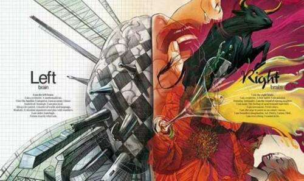
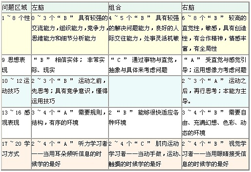

左右脑测试

1.当你唱歌的时候：
A. 喜欢读歌词
B. 会把旋律、节奏和歌词都背下来
2．当碰到困难的时候：
A. 认真思考，然后制定出逐步的解决计划
B. 依靠自己的感觉解决问题
3．当有约会的时候：
A. 会早点到，以防万一
B. 经常是准时到，或者稍微晚一点
4．当读书的时候：
A. 愿意去体会每句话中的细微差别
B. 会浏览一下，找一些比较有趣的内容
5．当烧饭的时候：
A. 经常是照着菜谱做
B. 会利用手边的材料，发挥自己的想像力
6．当有人问路的时候：
A. 会告诉他具体的街道名称，以及大致的距离
B. 会给他描述一下沿途中的显着标识
7．看电影时，记忆最深的是：
A. 情节
B. 演技
7. 在时间管理方面：
你做事井井有条，时间分配得当
你经常为拖延症感到焦虑和懊恼
8．我最佩服别人的 ：
A. 判断力
B. 同情心
9．脸部中央画一条竖线，我看到耳朵、眼睛和眉毛:
A. 左边的高
B. 右边的高
C. 高低不是很明显
10. 当我开抽屉的时候：
A. 用左手
B. 用右手<
11．我穿裤子的时候：
A. 先穿左腿
B. 先穿右腿
12．当我踢球的时候：
A. 用左脚
B. 用右脚
13．当我和朋友聊天的时候：
A. 我的声音很平淡
B. 我的声音富有感情
14．当我想听得更清楚的时候：
A. 会侧重于右耳听
B. 会侧重于左耳听
15．当我看望远镜的时候：
A. 用右眼看
B. 用左眼看
16．当我闻一瓶酒精时：
A. 左鼻孔较敏感
B. 右鼻孔较敏感
17 ．当我要想起以前的事时:
A. 向右看
B. 向左看
C. 向上，向下或者向前看
18．当与别人意见一致的时候，我一般会说
A. 听起来很有道理
B. 看起来我和你一样
C. 我感觉不错
19．当我看图“A”. 的时候，首先看到的是:
A. 许多 A
B. 一支箭
C. 一支由 A 组成的箭
20．我认为使自己能最快最好地接受信息的方式使：
A. 听到指令的时候
B. 看到指令的时候
C. 动手做的时候